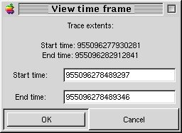

| Linux Trace Toolkit Reference Manual | |||
|---|---|---|---|
| <<< Previous Page | Home | Up | Next Page >>> |
It is possible for you to specify wich specific time interval you would like to display in the event graph. This is dont through the View Time Frame window:

Figure 1: The View Time Frame window
When first opened, the Start time and End time fields are populated with the current event graph extents. The trace extents are also displayed, which is the maximum viewable area. Change the Start time and End time values as you like. If they are out of bounds, the trace extents will be used instead.
| <<< Previous Page | Home | Up | Next Page >>> |
| Linux trace toolkit | View Time Frame window | ||